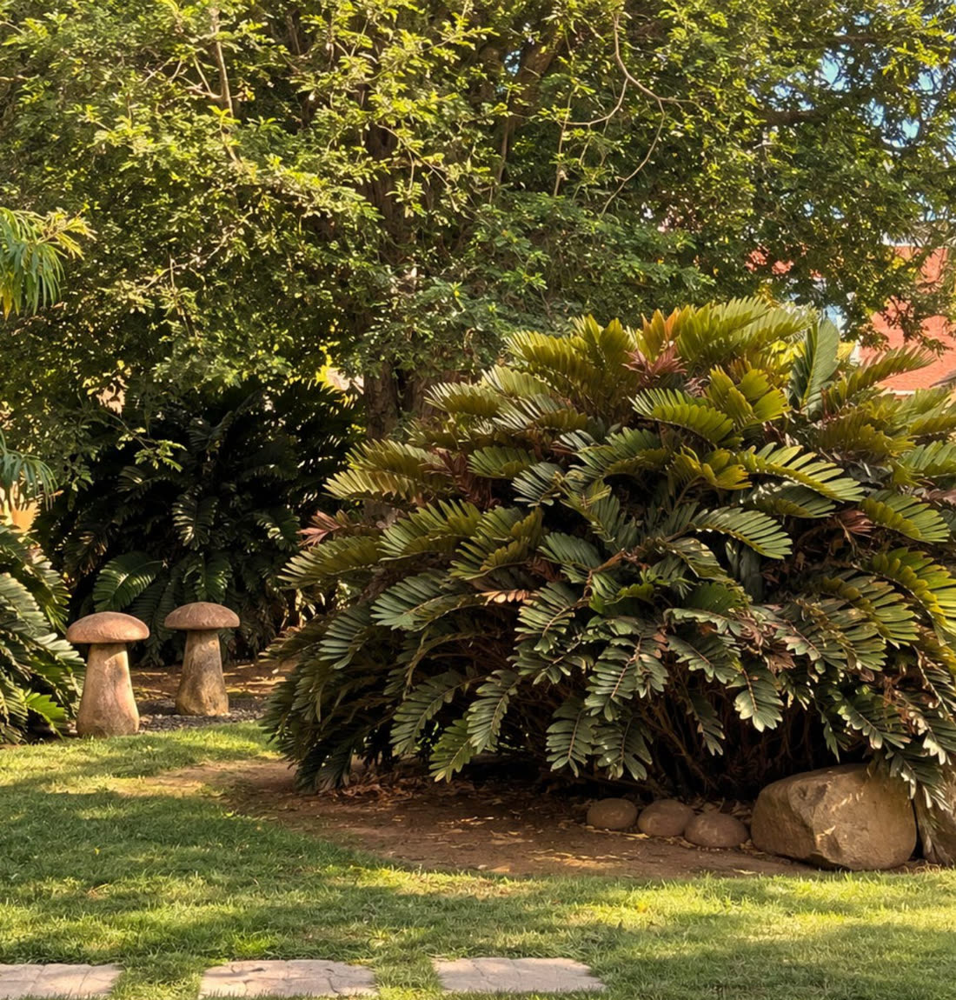
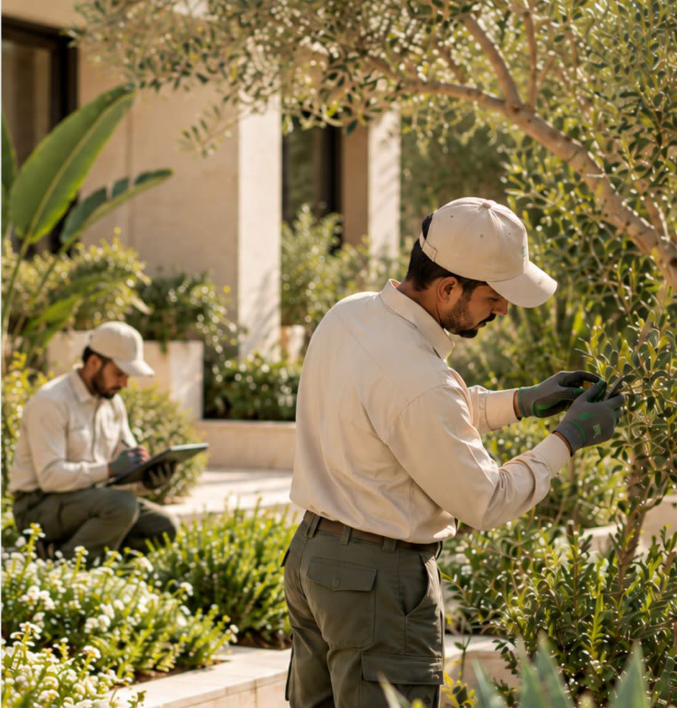
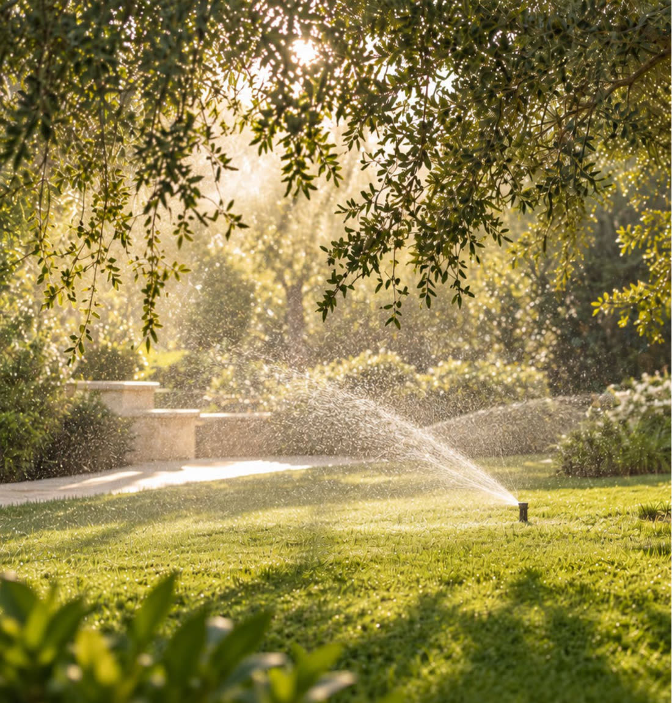
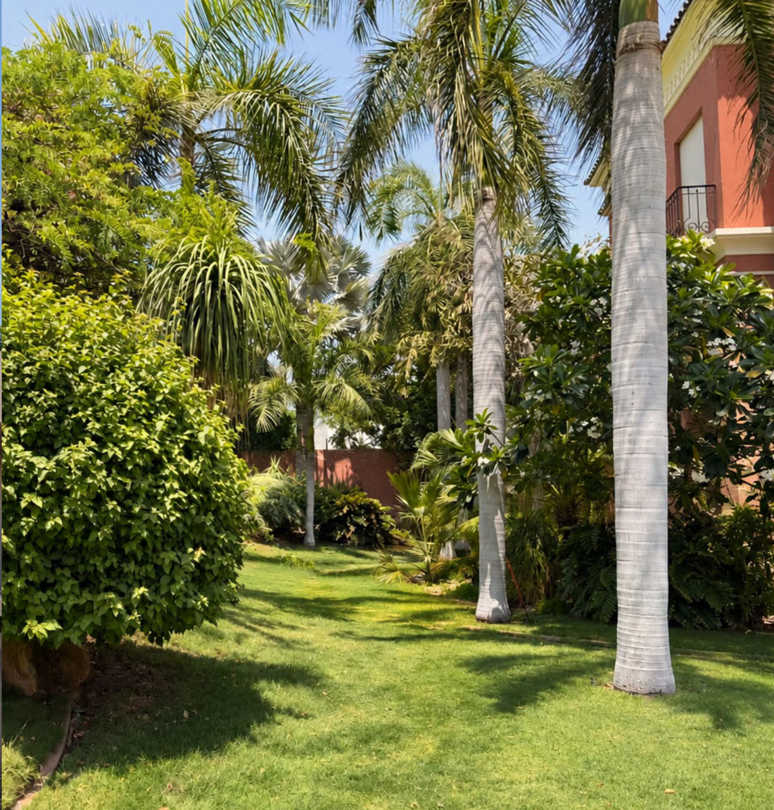
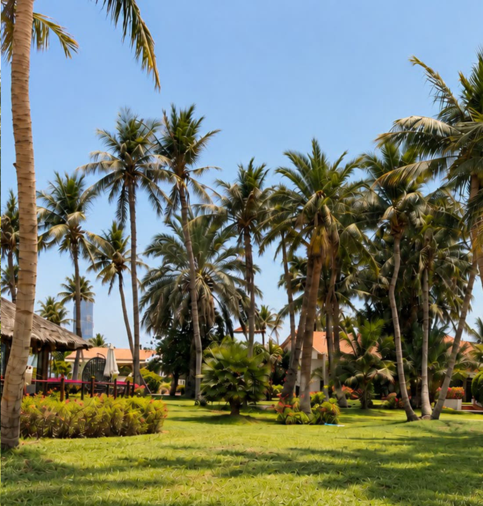

Private residences
Exceptional care, quietly delivered.
Maintaining a private residence requires more than technical skill. It requires discretion, consistency, and respect for the client's environment. Our teams work with careful scheduling, professional supervision, and minimal disruption.
Luxury landscape standards with private-home discretion.

Corporate & commercial spaces
First impressions begin outside.
The landscape surrounding a property is often the first impression people receive. We provide structured landscape maintenance for corporate and commercial environments, focusing on:
- Presentation
- Reliability
- Efficiency
- Long-term value

Horticultural & botanical care
Beyond the surface.
Our maintenance programmes are built around plant health. Rather than simply responding to symptoms, we look for the underlying causes.
We monitor
- Soil condition
- Pruning requirements
- Signs of pests or disease
- Nutrition
- Seasonal development
Our care includes
- Soil improvement
- Correct pruning
- Lawn care
- Seasonal planting
- Fertilization
- Tree and shrub management
- Ground covers
Observe early. Understand correctly. Care appropriately.

Irrigation & water management
Every drop matters.
Water is one of the most critical factors in landscape health. Too little water causes stress and decline. Too much can be equally damaging. Our recommendations are based on what the landscape actually needs. Where specialist technical work is required, we identify the concern and coordinate with the appropriate expertise.
We monitor
- Irrigation performance
- Water distribution
- Irrigation scheduling
- Seasonal adjustments
The right water. In the right place. At the right time.

Design & implementation
Designed to live. Built to thrive.
We provide landscape design and implementation for new and existing properties. From complete new landscapes to focused transformations, we create outdoor environments that are refined, liveable, functional, and appropriate to their context.
Our work considers
- Architecture
- Lifestyle
- Climate
- Plant selection
- Irrigation requirements
- Seasonal performance
- Long-term maintenance
We consider not only how a landscape looks on Day 1, but how it will grow, mature, and perform over time.

Landscape enhancement
Preserve. Refine. Enhance.
Not every garden needs to start again. Established gardens often contain valuable structure, mature planting, and character. Through selective enhancements, sensitive replanting, and careful refinement, we can bring fresh life to a mature landscape without losing its identity.
We assess
- What is working
- What should be preserved
- What needs improvement
- Where thoughtful interventions can elevate the landscape